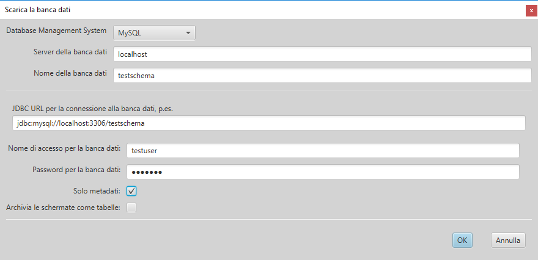
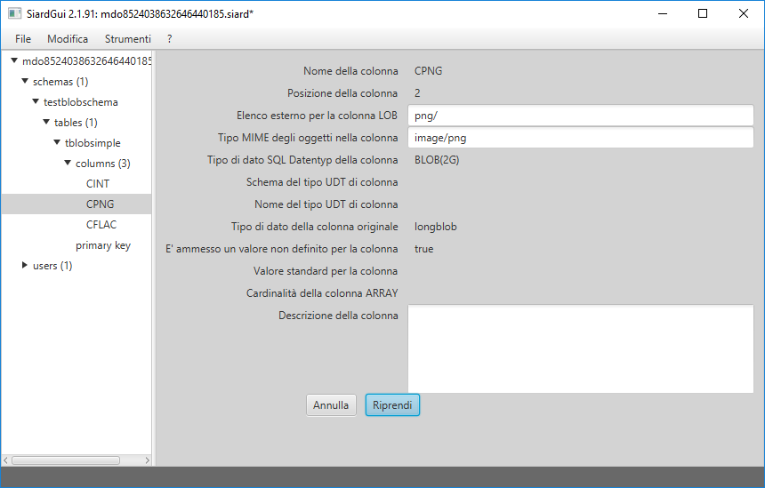
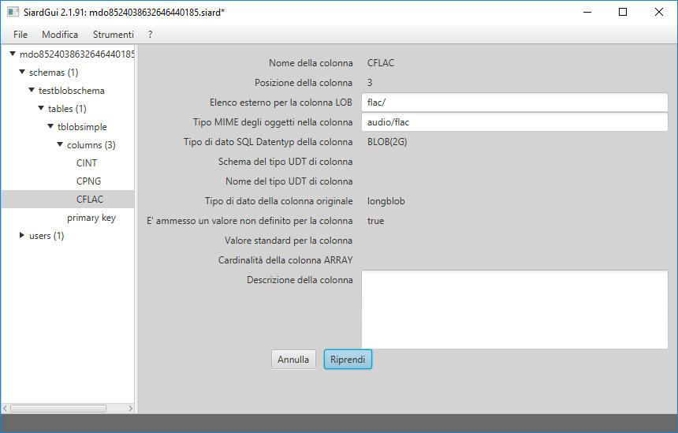
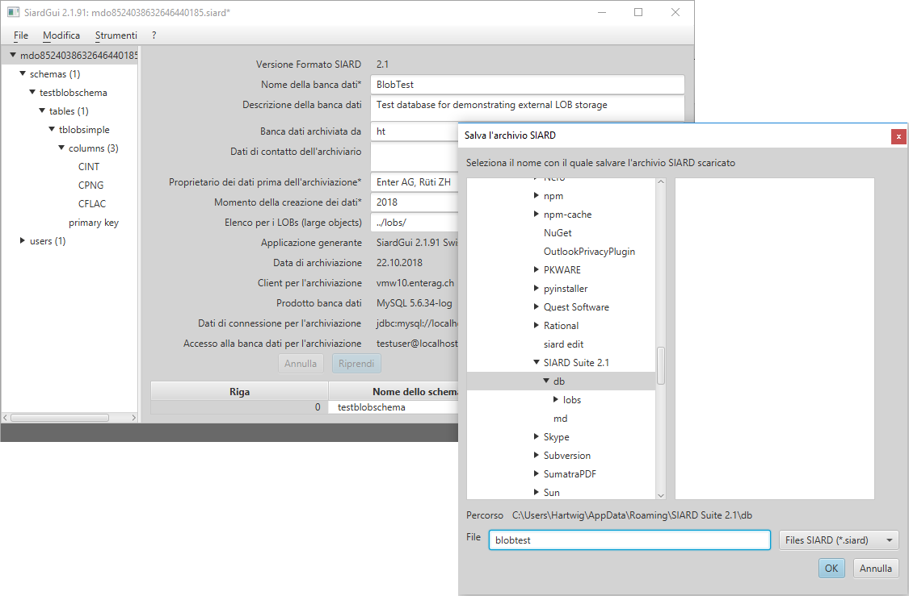

SIARD Suite 2.1 - LOBs esterni
Lo standard SIARD Format 2.1 stabilisce che oggetti di una banca dati di grandi dimensioni (LOBs), devono poter essere salvati in un sistema di file esterno. Il luogo del salvataggio dev'essere definito nei metadati dell'archivio SIARD.
Affinché questi oggetti possano essere salvati esternamente in colonne LOBs proprie della banca dati, le relative colonne devono essere prima collegate con elenchi esterni idonei. La banca dati può essere quindi scaricata.
Download dei metadati
Per collegare degli elenchi alle colonne della banca dati, occorre innanzitutto scaricare i metadati della banca dati interessata.

Registrazione dei luoghi di salvataggio esterni
I campi dei metadati "Elenco per i LOBs" e "Tipo MIME" degli oggetti della colonna" possono ora essere compilati.
Il luogo di salvataggio di una colonna LOB può essere registrato come file assoluto "file:-URI"", consigliamo però di specificare tutti i luoghi di salvataggio LOB in relazione a un URI globale nella parte globale dei metadati SIARD. E' inoltre indicato inserire allo stesso tempo i metadati globali per i nomi delle banche dati ecc.

tutti gli elenchi LOB devono terminare con una
barra obliqua, la quale indica che si tratta di una cartella
esterna esistente nel sistema di file.
Il luogo di salvataggio globale esterno potrebbe essere
indicato come file assoluto file:-URI. Ciò però
impedirebbe che l'archivio SIARD possa essere spostato
insieme ai suoi file LOB su un altro posto. Consigliamo
pertanto di specificare il luogo di salvataggio esterno
globale in relazione all'elenco dove è salvato l'archivio
SIARD, contraddistinto da una "../". Nell'esempio di cui
sopra, l'elenco globale per i LOBs è specificato come
"../lobs/". Tutti i LOBs esterni vengono quindi salvati
in elenchi relativi alla cartella lobs nell'elenco dove
si trova l'archivio SIARD.
L'elenco per una colonna LOB esterna, sarà quindi definito in relazione al luogo di salvataggio globale:

Con il valore "png/" in quest'esempio, SIARD Suite
riceve l'ordine di salvare i LOBs esterni della colonna
CPNG della tabella tblobsimple nella
cartella esterna esistente lobs/png/, dove si
trova l'archivia SIARD.
N.B.: se nel dialogo delle opzioni è stato indicato un numero massimo di LOBs per cartella, i file LOBs sono salvati da lobs/png in sottocartelle numerate, che contengono al massimo il numero di file LOB indicati.
Per colonne LOB salvate esternamente, può essere registrato un tipo MIME degli oggetti ("image/png" nell'esempio). Questo è utilizzato da SIARD Suite per definire un'estensione file idonea per i valori LOB esterni (p.es. .png per il tipo MIME image/png).
In una banca dati si può salvare esternamente più di una colonna LOB:

Concluse queste modifiche, si consiglia di visualizzare
i metadati cambiati e di salvarli come XML.
Download di LOBs da salvare esternamente
Se sono disponibili dei metadati modificati in tal modo (importati da un file XML esterno oppure importati come "Solo metadati"), allora questi sono utilizzati come modello campione per il download dei dati primari. Ciò significa che le registrazioni nei metadati globali sono riprese per tutte le descrizioni e per gli elenchi LOB esterni:

In questo esempio viene salvato un piccolo file SIARD,
che rimanda a dei BLOBs negli elenchi lobs/png/
e lobs/flac/ nel loro elenco di salvataggio db:

N.B.: l'Explorer di Windows mostra dei metadati incorporati in file FLAC, poiché l'estensione .flac è conosciuta e quindi i metadati di questi tipi di file possono essere identificati.